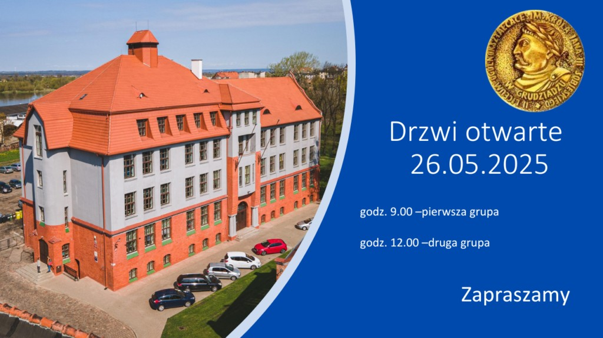
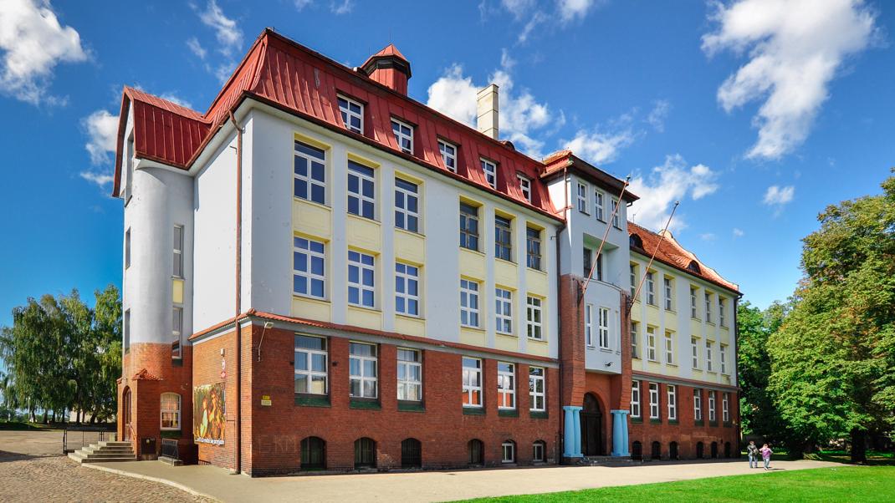
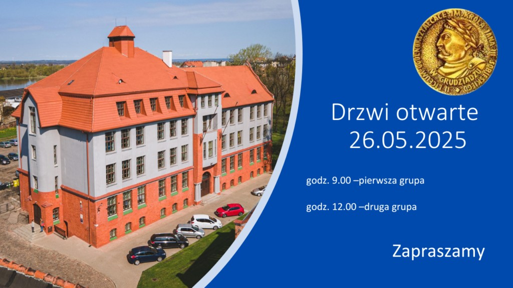
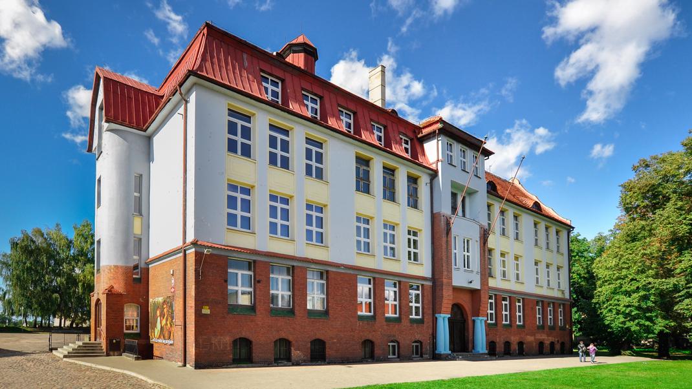

Historia szkoły
Placówka powstała w 1874 roku jako pruskie Gimnazjum Królewskie, reaktywowane w 1920 roku jako polskie gimnazjum. W 1976 roku przywrócono patrona, Jana III Sobieskiego, a budynek przy ul. Marcinkowskiego 10 służy od 1951 roku.
Kontakt i lokalizacja
- Adres: ul. Marcinkowskiego 10, 86‑300 Grudziądz :contentReference[oaicite:3]{index=3}
- Telefon/fax: (56) 462‑22‑65
- Telefon komórek: +48 609 003 979
- Email: lo2.dyrektor@lo2.grudziadz.pl
Osiągnięcia
Ranking "Perspektyw"
Szkoła znajduje się w czołówce liceów województwa kujawsko‑pomorskiego :contentReference[oaicite:4]{index=4}.
Olimpiady i konkursy
Uczniowie zdobywają tytuły laureatów i finalistów w olimpiadach: chemicznej, biologicznej, fizycznej, historycznej i językowych :contentReference[oaicite:5]{index=5}.
Drzwi Otwarte
Ostatnia edycja odbyła się 26 maja 2025: spotkania o 9:00 i 12:00 :contentReference[oaicite:6]{index=6}.
Termomodernizacja
Budynek przeszedł modernizację budowlano‑energetyczną – wymiana stolarki i ocieplenie :contentReference[oaicite:7]{index=7}.
Galeria zdjęć
 


